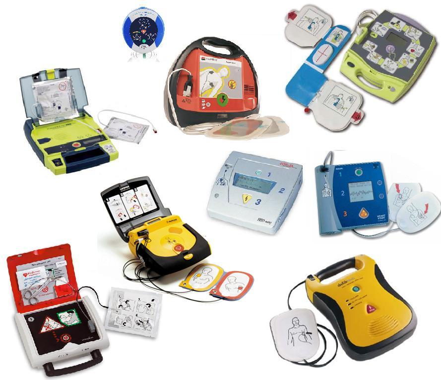
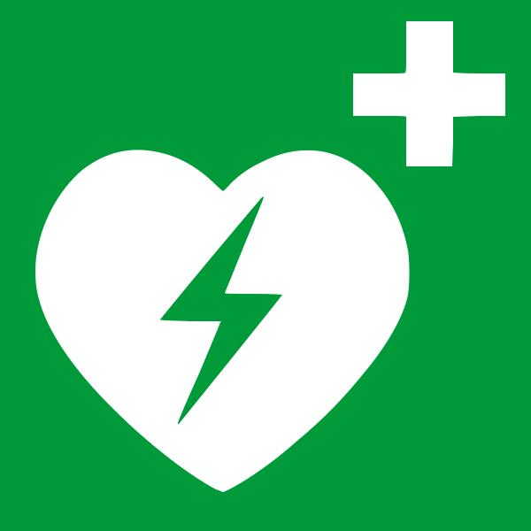
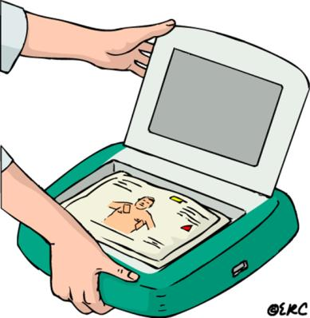
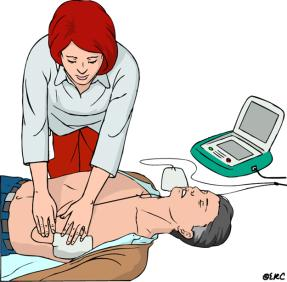
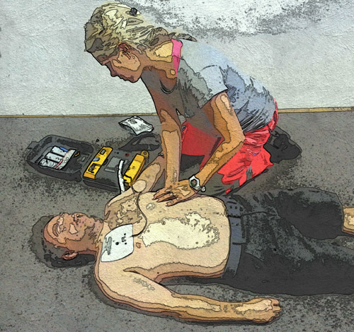
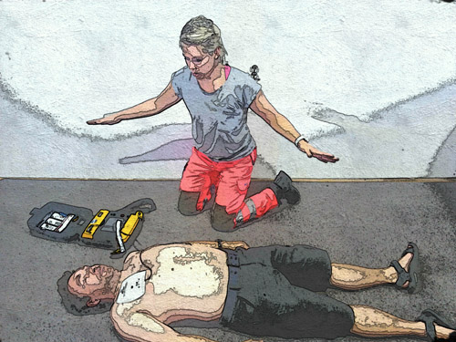
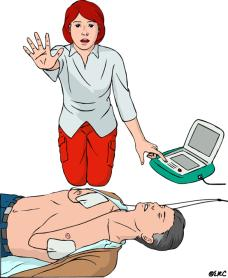
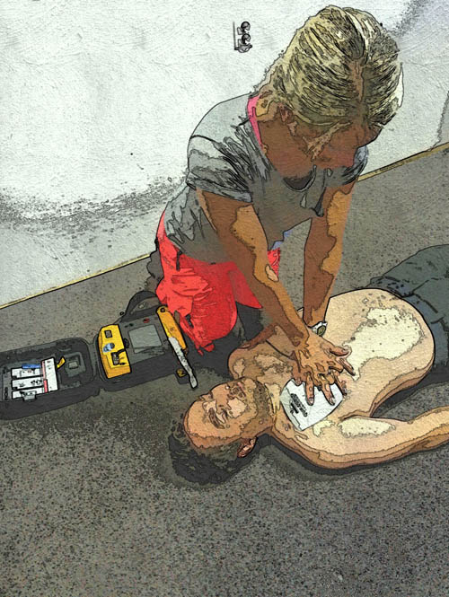
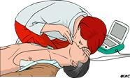
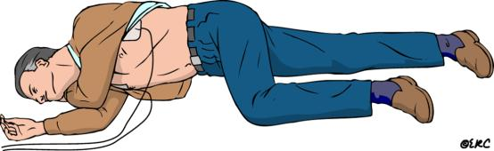

UPORABA AVTOMATSKEGA ZUNANJEGA DEFIBRILATORJA
Avtomatski zunanji defibrilator (AED) je naprava, ki jo uporabimo za zdravljenje motenj srca, ki vodijo v zastoj srca. Zaradi svoje preproste zasnove je njegova uporaba varna in preprosta tudi za ljudi, ki nimajo zdravstvene izobrazbe. Uporaba AED brez temeljnih postopkov oživljanja (masaža srca in umetno dihanje) ni učinkovita.

Slika 1. Različni modeli AED, vsi z istim namenom

Slika 2. Uradna oznaka, ki označuje prisotnost AED
AED je zaradi dokazane učinkovitosti zdravljenja motenj srčnega ritma z elektriko postal sestavni del smernic za oživljanje. Njegova preprosta uporaba in varnost sta pri tem v veliko pomoč. Preko elektrod, nameščenih na goli prsni koš, analizira ritem bolnika, ki potrebuje oživljanje, in se na podlagi analize odloči, ali je električni sunek potreben ali ne. Daje nam jasna, enostavna glasovna navodila in nas vodi skozi potek oživljanja. V primeru težav ali okvare nas aparat na to opozarja že v stanju pripravljenosti.
POSTOPEK UPORABE AED
Ko ugotovimo, da je pri bolniku potrebno oživljanje (se ne odziva, ne kaže nikakršnih znakov življenja in ne zaznamo dihanja), vedno pomislimo na AED. O tem lahko povprašamo tudi na številki 112. Takoj ko imamo AED na razpolago, ga vključimo in na bolnika namestimo elektrode na goli prsni koš.

Slika 3. Vklop AED
Eno elektrodo namestimo pod desno ključnico, drugo pa na levo stransko steno prsnega koša pod levo prsno mišico oziroma dojko. V kolikor je bolnik močno poraščen, ga obrijemo z britvico, ki je priložena k AED. Če ima bolnik moker prsni koš, ga je treba obrisati, preden nalepimo elektrode.
 
Sliki 4 in 5. Namestitev elektrod
Ko AED zazna nalepljene elektrode, začne analizo ritma. Ob tem se bolnika ne smemo dotikati. Glede na analizo nam lahko predlaga dve možnosti. Šok je priporočen ali šok ni priporočen.

Slika 6. Med analizo ritma se bolnika ne dotikamo.
ŠOK JE PRIPOROČEN
V tem primeru se bo aparat pripravil za sproženje električnega sunka. Človek, ki upravlja AED, mora poskrbeti, da se ob proženju nihče ne dotika poškodovanca, in mora glasno opozoriti vse v okolici, naj se ne dotikajo bolnika. Aparat se zaradi varnosti ne bo nikoli sprožil sam, ampak je treba pritisniti gumb za sproženje električnega sunka. Ta gumb ima narisano tako imenovano strelo in utripa. Po opravljeni defibrilaciji takoj nadaljujemo oživljanje, dokler nas AED ponovno ne opozori, da bo začel analizo ritma (na dve minuti).

Slika 7. Zagotovi varnost in pritisni gumb za sproženje.
ŠOK NI PRIPOROČEN
Takoj nadaljujemo postopke oživljanja, dokler nas AED ponovno ne opozori, da bo začel analizo ritma (na dve minuti).
 
Sliki 8 in 9: Nadaljujemo oživljanje.
Na dve minuti bo pri bolniku potekala analiza ritma, na podlagi katere se bo aparat odločil o potrebi po električnem sunku. Ves čas oživljanja nam bo AED dajal navodila za oživljanje.
Ko pri bolniku opazimo zanesljive znake življenja (dihanje, premikanje …), ga namestimo v bočni stabilni položaj. Elektrode ostanejo nalepljene na prsnem košu, mi smo z njim in ga opazujemo.

Slika 10. Bočni stabilni položaj. Elektrode so pričvrščene na prsnem košu.
*AED je kratica za Avtomatic External Defibrilator.
Kdo vse lahko uporabi AED?
Komu lahko namestimo AED?
Kdaj lahko sprožim AED?